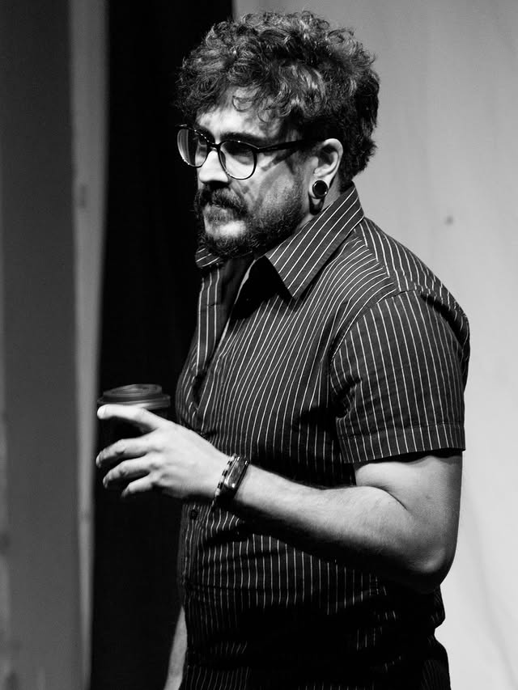

Gabriel Caropreso
Ator · palhaço · improvisador · músico · diretor — São Paulo
Investiga o teatro físico e a palhaçaria. Foi fundador do coletivo Quase Todos / Quem Sobrou (ProAC 2018), onde co-dirigiu o espetáculo SigoDeVolta. Integrou pesquisas em dramaturgia improvisada e atuou em montagens de teatro de rua e performance. Lecionou no Espaço da Comédia, Teatro dos Arcos e Improclube. Em 2025, dirigiu e lecionou no Festival Internacional de Improvisação Irreverente, em Lisboa.